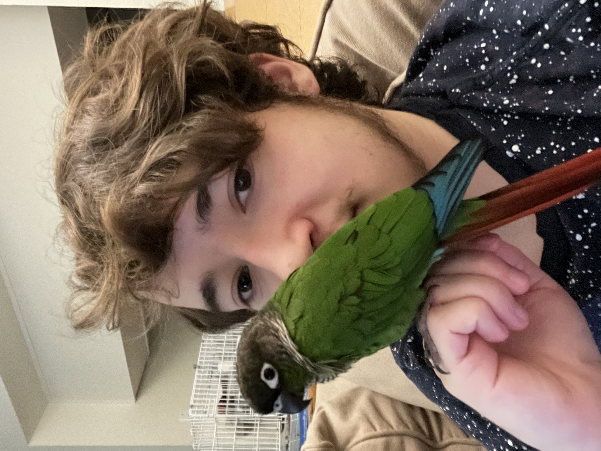

About Me
Hi there, I'm Max! I'm currently a programming student at Ada Developers' Academy in Seattle, WA.
I've been interested in programming and tech from a very young age, but only considered it as a potential career when I chose to revisit Python in summer of 2021. Before then, my goal was to work in animation - something I still greatly enjoy and would like to incorporate into my coding projects someday.
When I'm not coding or working on assignments, I love drawing, playing video games, and hanging out with my partner and our pet bird, Kiwi!